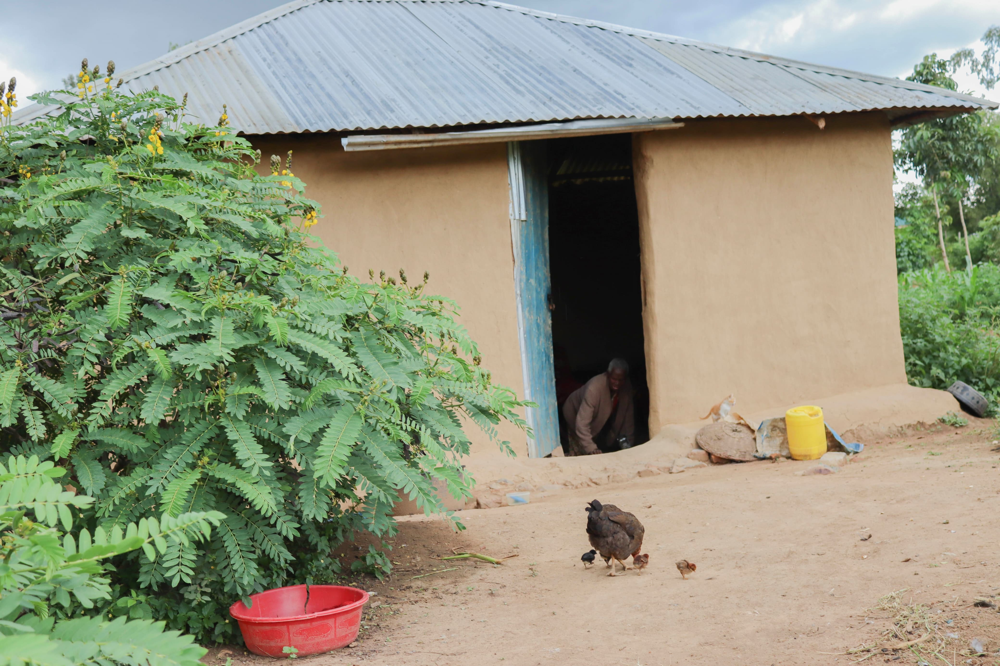
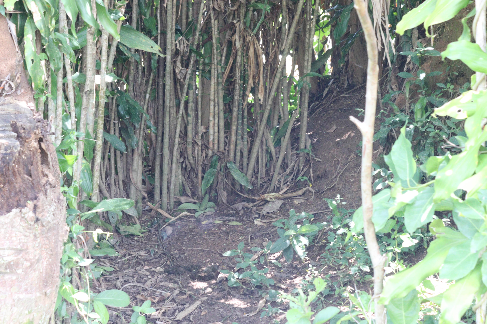
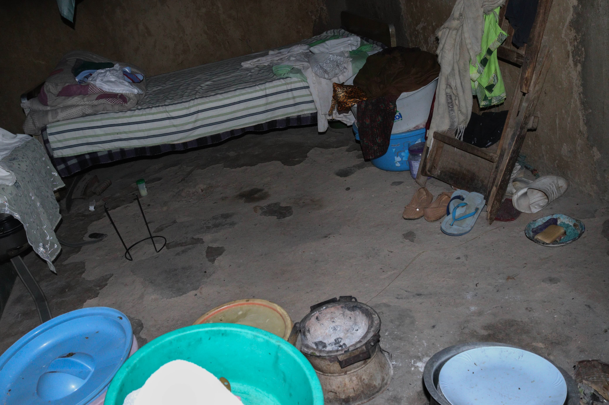
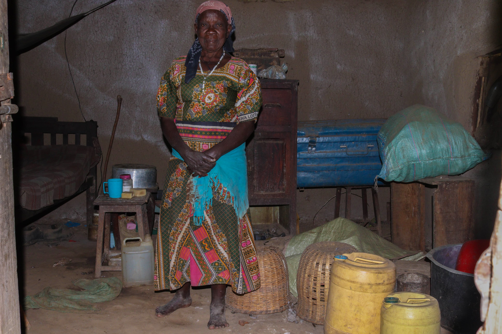
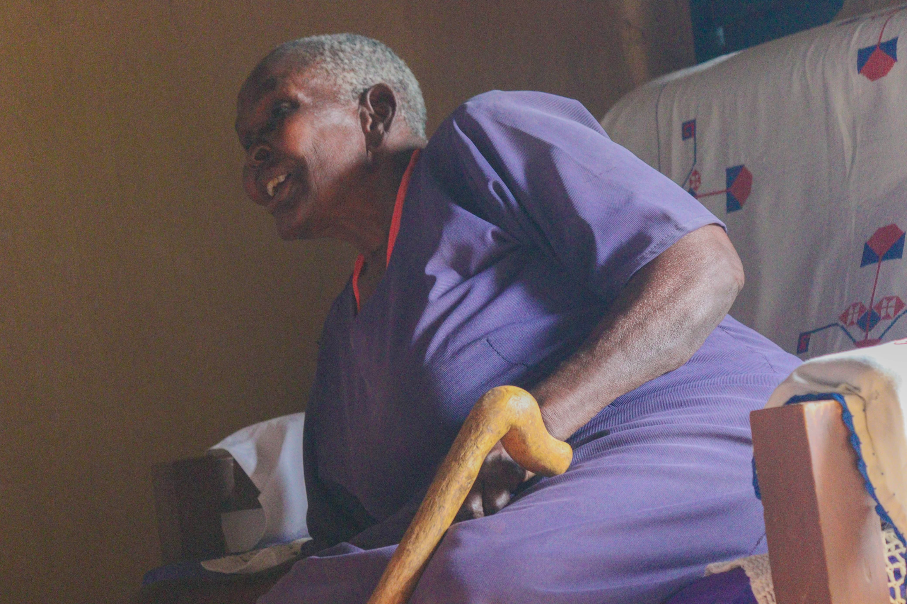
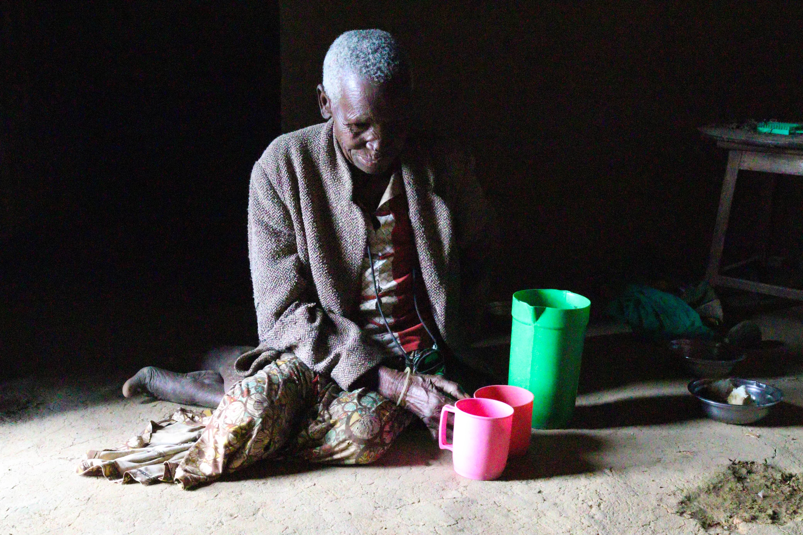
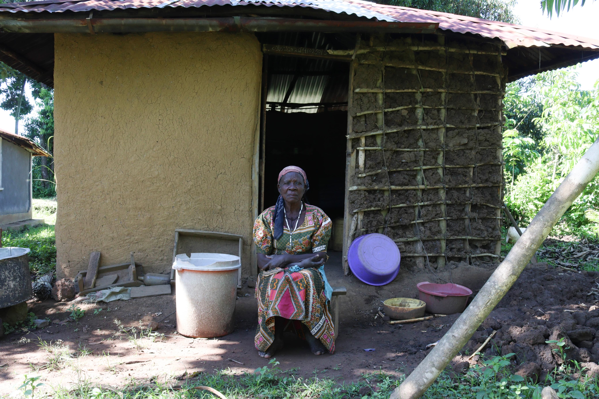

Safe washrooms
Our first goal is to build simple, private washrooms at the homes of the elderly — so that no one ever has to walk into the dark again.

A Community Based Organisation · Kenya
Growing old should never mean being left unsafe, unseen or alone. Mananda walks alongside elderly men and women in our community — beginning with something simple, and life-changing: a safe place to go.
The Need
In many homes here there is no latrine — not even a simple pit. When night falls and nature calls, our elderly have only one choice: to walk into the bush, alone, in the dark.
One night an elderly woman of seventy-five went out to relieve herself near the bushes by her home, because she had no toilet of her own. There, in the dark, she was attacked and raped. She was someone's mother. Someone's grandmother.
Stories like hers are why Mananda exists. For an older person, the lack of a toilet is not a small inconvenience — it is a matter of safety, health and dignity. We refuse to accept that this is simply how things must be.


A toilet at home means no dangerous walk into the dark.
Clean sanitation protects fragile, ageing bodies from disease.
Every elder deserves privacy, comfort and respect.

Who We Are
Mananda is a grassroots Community Based Organisation in Kenya, founded by people who simply could not look away.
We grew out of a deep love and respect for our elders — the people who raised our families and built our communities, and who too often spend their final years without the basic care they once gave to everyone else.
We are local. We know these families by name. We sit with them, listen to them, and work alongside them to meet real, practical needs — beginning with safe sanitation, and growing from there.
See our workWhat We Do
We start small and we start close — meeting the needs in front of us, for the elders we know by name.

Our first goal is to build simple, private washrooms at the homes of the elderly — so that no one ever has to walk into the dark again.

We help with daily needs — clean water, food and basic household items — like the water containers we brought to Jennifer.

We visit, we listen, and we make sure our elders know they are loved, remembered and never alone.
Our Elders
These are the people you would be standing with — real lives, real homes, here in our community.





Get Involved
Every washroom built, every visit made, every container of clean water is possible because people choose to help. Here is how you can.
Contact
Would you like to help, partner, or simply learn more? Please reach out — we would love to hear from you.